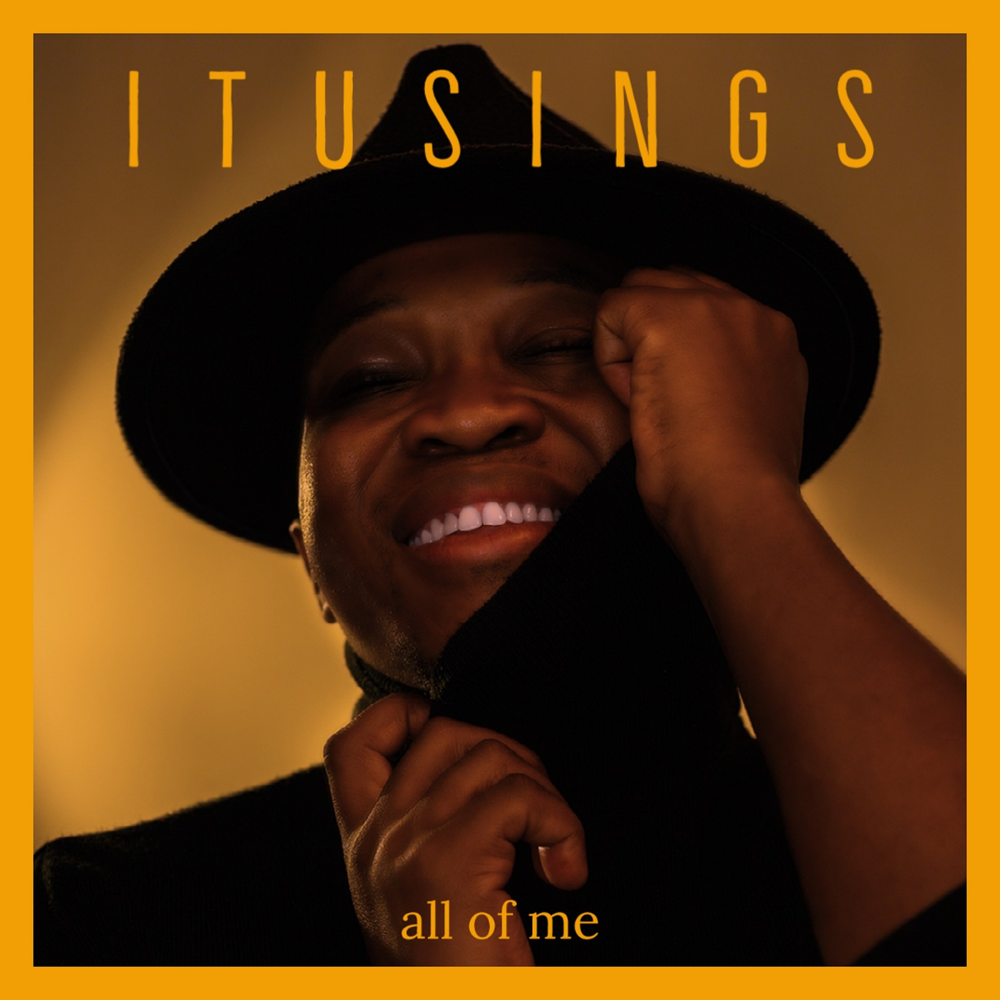

About
The Artist
ItuSings is a South African singer and performer from Pheli, Pretoria, celebrated for his powerful vocals, emotional depth, and commanding stage presence. His journey began in 2014 when he won CMS Unplugged with Metro FM by popular vote — a defining breakthrough that introduced him to national audiences. He later appeared on The Voice SA and Pursuit of Jazz, cementing his place in the music industry.
His acclaimed cover of "No Woman No Cry" earned him widespread respect, while "Missing You" with Encore and "All of Me" continue to showcase his artistry and versatility.
- CMS Unplugged Winner — Metro FM · 2014 (popular vote)
- Featured on The Voice SA & Pursuit of Jazz
- Collaboration with Grammy Award-winner Vusi Mahlasela
- Corporate stages: Vodacom · RMB Starlight Classics · Athletics SA · CSIR
- International shows — Silversea & Silver Ray · Royal Caribbean Productions
Music
Latest Release

Single
All of Me
ItuSings
Book ItuSings
Enquiries & Bookings
Available for corporate events, live shows, collaborations, gala dinners, and private performances across South Africa and internationally.
Follow
Stay connected with ItuSings